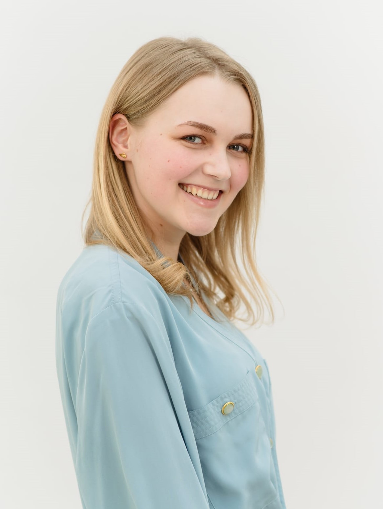

Căpusneac Daniela - Mihaela

Futere Front-End Developer
I can’t remember that time when I wished to accomplish something and didn't make
it happen. This could be because I rarely set goals, but when I do, I take care
to make them real. Also, I believe that if I didn't put in enough time and hard
work to achieve some of them, those goals weren't the right ones for me, for
building the person I have become, so is better to let them go. One of the goals
that are unequaled is the ambition to become a Front-End Developer. And, to go
further, to be a Front-End Developer at the Assist Software Company.
Education:
2018-2022: I studied at "Petru Rareș" National College;
2022: I started my studies at "Ștefan cel Mare" University in Suceava,
Faculty of Letters and Communication Sciences, Digital Media specialization;
Experience:
- I achieved the third prize at the student hackathon "România fără dosar";
- I completed the "Responsive Web Design Certification" course on freeCodeCamp;
- I take the "JavaScript Algorithms and Data Structurea Certification" course;
- I will take the course "React - The Complete Guide" by Maximilian Schwarzmüller.
Skills:
HTML
CSS
JavaScript
Teamwork
Time Management
Fast Learning
Searching